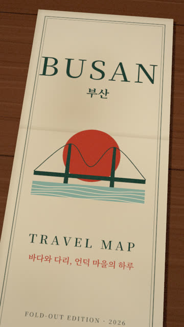
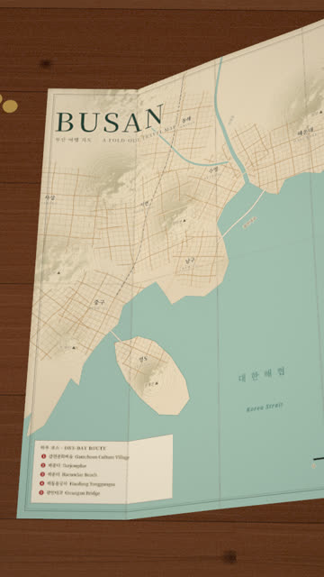
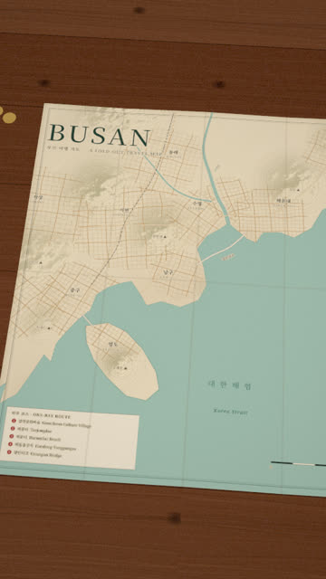
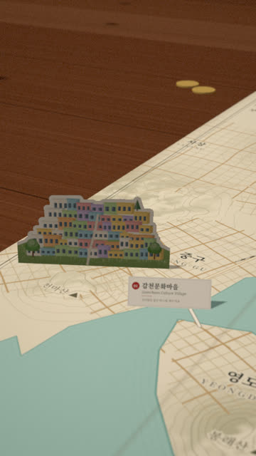
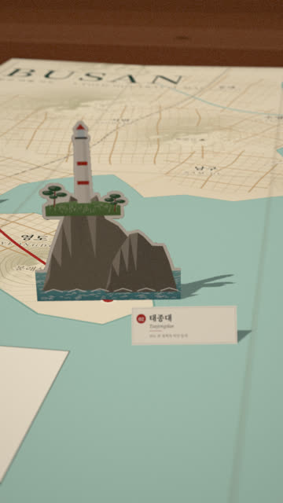
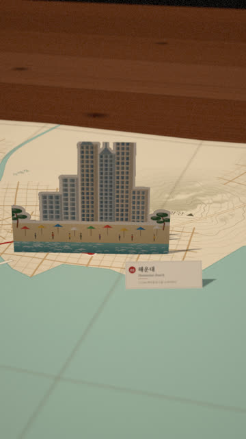
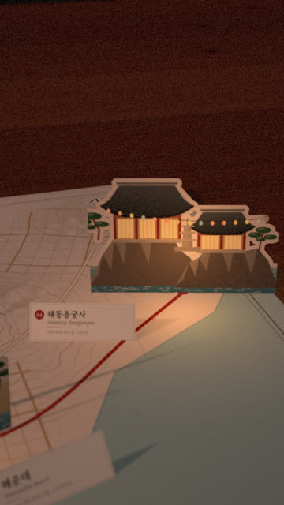
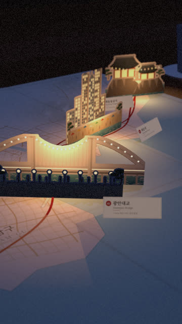
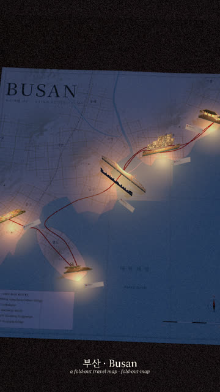
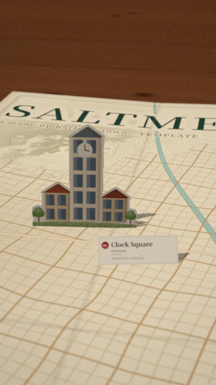

작업 흐름
- 입력
- 장소 하나와 여행 코스(도시, 동네 산책, 캠퍼스, 축제장, 가상의 마을)
- 브리프
- 투영 중심과 축척, 해안 · 섬 · 강 · 산 · 동네 격자 · 큰길 · 지명, 표지와 안내 면, 코스 순서대로 3–6곳의 이름 · 한 줄 설명 · 팝업에 그릴 모습 · 보는 방향, 시간표, 빛이 바뀌는 때
- 장면
- 인쇄된 지도 면과 뒷면(표지, 안내), 명소마다 새로 그린 다이컷 팝업 카드(밤에 켜질 불빛 포함), 빨간 길, 펼침과 여행 카메라, 낮 → 노을 → 밤의 빛
- 확인
- 펼침 구간과 명소마다 스틸 · 콘택트 시트, 글꼴 · 결정성 · 빈 프레임 · 카메라 높이 · 명소와 이름표가 화면 안에 읽히는 크기로 있는지 · 겹침 · 책상 소품 위치 검사, 검토 기준 채점
- 출력
- 30fps 1080×1920 MP4(종이 소리와 장면 신호로 만든 음악 포함), 끌어서 시간을 감아 보는 라이브 페이지
cd fold-out-map/examples/busan
node ../../scripts/render.mjs index.html --stills 1,10,24.5,29.5 --scale .5
node ../../scripts/check.mjs index.html
node ../../scripts/score.mjs index.html
node ../../scripts/render.mjs index.html --workers 4 --audio out/score.wav
node ../../scripts/new-film.mjs ../../../my-trip요구 사항: Node + Playwright Chromium(WebGL2), ffmpeg, 글꼴을 받을 때 한 번의 네트워크. 이미지 · 영상 생성 모델은 쓰지 않습니다. 단계별 순서는 SKILL.md에 있습니다.
샘플
원본 영상(청두)에 없던 주제인 부산으로 만든 예제 「부산」의 장면들과 시작 템플릿입니다. 카드를 누르면 새 탭에서 그 장면이 그 순간에 멈춘 채 열리고, 브라우저가 직접 그립니다.
부산 9:16 · 38초
접힌 리플릿이 펼쳐지고, 감천문화마을 → 태종대 → 해운대 → 노을의 해동용궁사 → 밤의 광안대교로 빨간 길이 이어진 뒤 밤의 지도 전체로 올라갑니다.

종이 · 0.6초접힌 리플릿
한 패널의 뒷면에 인쇄된 표지. 책상 위 컵 · 연필 · 안경 · 동전

종이 · 4.3초펼침
가로 접힘 먼저, 다음은 위에 쌓인 병풍 접힘부터 차례로. 종이는 책상을 뚫거나 뜨지 않음

지도 · 6.6초펼친 지도
접힌 자국이 남은 인쇄 지도. 해안 띠, 등고선, 동네마다 각도가 다른 거리 격자, 명조체 지명

명소 01 · 10초감천문화마을
길이 닿으면 종이에서 자라나 튀어 오르는 다이컷 카드와 기울어 서는 이름표

명소 02 · 14.6초태종대
영도 끝의 절벽과 등대. 빨간 길이 다리를 건너 섬으로

명소 03 · 19.5초해운대
두 겹 팝업: 뒤에 타워, 앞에 백사장. 뒤 카드가 먼저 일어섬

명소 04 · 24.5초해동용궁사
노을: 낮게 기운 따뜻한 빛, 문살에 불이 들어오기 시작

명소 05 · 29.5초밤의 광안대교
밤에는 그려 둔 불빛만 켜짐: 창문, 케이블 조명, 가로등. 팝업 아래 불빛 웅덩이

밤 · 37.2초밤의 지도
높이 올라가 본 전체 코스. 모든 팝업이 선 채 빛남

템플릿 · 24초시작 템플릿templates/film.html
가상의 항구 마을, 명소 셋(시계탑 · 부두 · 풍차 언덕). 부분마다 주석
실제 작품
이 레포에서 만든 스킬입니다. 沐阳(@yyyole)이 X에 올린 청두 여행 지도 영상에서 형식(책상 위에 접힌 리플릿이 펼쳐짐, 빨간 길, 서 있는 명소 그림, 낮은 카메라, 낮에서 밤으로)만 빌렸습니다. 원본은 명소 그림을 이미지 모델로 만들었지만 여기서는 모두 코드로 그리고, 코드와 지도, 부산 예제의 장소와 구성은 모두 이 레포의 것입니다.
링크
- SKILL.md 워크플로
- 폴더 lib · scripts · templates · references · examples
- README.md 빠른 시작
- references/BRIEF.md 장소와 코스에서 브리프로, 검토 기준
- references/LOOK.md 종이 지도와 팝업으로 보이게 하는 수치, 빛, 카메라
- references/KIT.md 엔진 · 지도 · 팝업 카드 API, 새 팝업 그리기
- references/LESSONS.md 겪은 문제와 해결